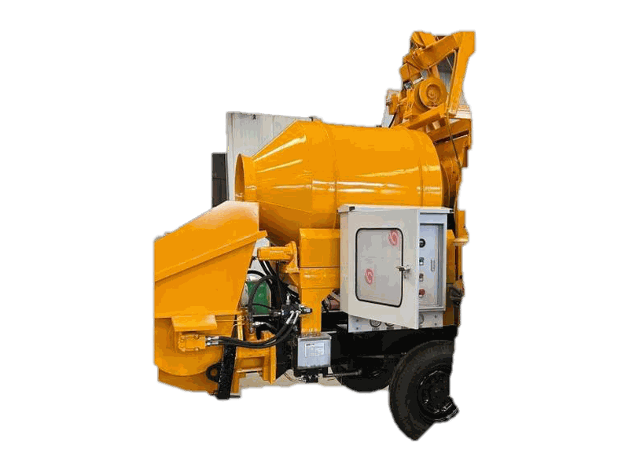

Inicio › Ventas › Equipos para Concreto y Pavimento
Equipos para Concreto y Pavimento
Centrales y bombas de concreto, reglas láser vibratorias, allanadoras, cortadoras de piso, máquinas de marcado vial y la proyectora de revoque GNH: producción, colocación, nivelación y terminación del hormigón en obra.
Para pisos de alta planicidad, la combinación es regla láser + allanadora. Para volumen continuo sin depender de hormigonera externa, la central de concreto con bomba.
Modelos disponibles
-
Regla Láser Vibratoria WS940
Nivelación láser de pisos de concreto de alta precisión. -
Bomba Transportadora de Concreto
Bombeo y transporte de concreto con caudal estable y operación continua. -
Allanadora de Concreto 1 m
Alisado y pulido de pisos de concreto. Ancho de trabajo de 1 metro. -
Cortadora de Piso
Corte de juntas en concreto y asfalto con disco diamantado. -
Máquina de Marcado Vial
Marcación de pavimentos y viales con pintura de alto rendimiento. -

Central de Concreto JBTS20
Mezcladora y bomba de concreto sobre remolque. Equipada con motor Cummins, para producción y bombeo continuo en obra.
Ficha técnica (PDF) ⬇ -
Proyectora de Revoque
Máquina de proyección de revoque — nuevo lanzamiento GNH. Proyecta mortero directamente sobre la pared con caudal continuo: el complemento ideal del Mortero de Proyección Hormigomix.
Ficha técnica (PDF) ⬇
Central de Concreto JBTS20 — especificaciones
Mezcladora y bomba en un solo equipo: produce el concreto en obra y lo bombea hasta 260 m en horizontal u 80 m en vertical, sin depender de hormigonera externa. Motor diésel Cummins de 75 kW.
| Sistema de bombeo | |
|---|---|
| Producción máx. de concreto | 10–20 m³/h |
| Presión máx. de salida | 8 MPa |
| Alcance teórico máx. (horizontal / vertical) | 260 m / 80 m |
| Asentamiento del concreto (slump) | 100–230 mm |
| Tamaño máx. de agregado | ≤ 30 mm |
| Cilindro de concreto (diámetro / carrera) | 140 / 700 mm |
| Capacidad de tolva · altura de carga | 300 L · 1.300 mm |
| Mezclador | |
| Capacidad de carga / descarga | 400 L / 200 L |
| Motor y sistemas | |
| Motor | Diésel Cummins · 75 kW @ 2.100 rpm |
| Componentes eléctricos | Schneider / Omron / CHNT (o según requerimiento) |
| Sistema hidráulico | 280 L · circuito abierto · válvulas Bolseen · mangueras Manuli |
| Limpieza de tubería | Lavado con agua |
| Transporte | |
| Dimensiones (largo × ancho × alto) | 4.300 × 1.700 × 2.450 mm (ajustable) |
| Peso total | 3.950 kg |
Datos del catálogo del fabricante. Consultanos por configuraciones y disponibilidad. · Descargar ficha técnica (PDF)
Consultar por WhatsAppAsesoramiento técnico para elegir el equipo según la obra. Atendemos en español y portugués.